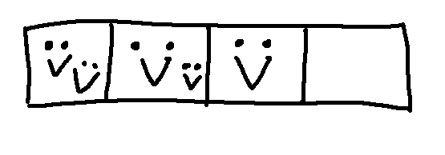
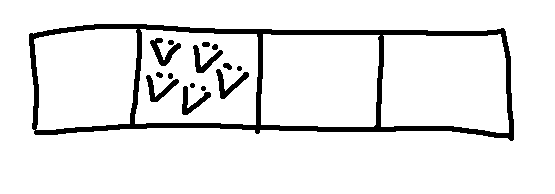

Suppose that we're keeping pigeons in a set of boxes ("pigeonholes"). If we have fewer pigeons than holes, or the same number, each pigeon can have a single.
However, if we have more pigeons than holes, some of them have to double up.
The "pigeonhole principle" says that if you have more variables than values, two variables have to have the same value. If you have more objects than labels, two objects must have the same label. It's really as simple as it sounds. The tricky bit (as we'll see) is seeing the trick required to apply it to a more complex problem.
Notice that we're guaranteed that at least two are sharing, but we can't conclude anything more about how the values are arranged. To return to our pigeons, it could be that two pairs are sharing.

It could even be that there's a party in one pigeonhole and the rest are all empty.

I guess this was pre-covid?
Let's do a sample proof with the pigeonhole principle. Warning: these are very frequently "trick" proofs where it can be hard to figure out the trick. We have to be very careful about which ones to put on exams.
Consider this claim:
Claim: Let S be a set of n+1 natural numbers, all between 1 and 2n (inclusive). There is a number \(x \in S\) that divides some number \(y \in S\).
Oops, there's bug with this. As written, the claim is true for the stupid reason that we could just set x equal to y. A number always divides itself. So what I actually meant to claim is this.
Claim: Let S be a set of n+1 natural numbers, all between 1 and 2n (inclusive). There is a number \(x \in S\) that divides a different number \(y \in S\).
Our task is to massage this problem until we can identify the pigeons and the pigeonholes. In this case, the trick is to represent each number S as an odd part and an even part. Specifically, suppose that \(S = \{k_1,\ldots,k_{n+1}\}\). For each number \(k_m\), suppose that \(q_m\) is the product of all its odd factors and \(2^{p_m}\) contains all the 2 factors.
Consider the odd factors \(q_1, \ldots, q_{n+1}\). They cannot all be different because there are n+1 elements of S and only n odd numbers between 1 and 2n. So there are two indices (call them s and t) such that \(q_s = q_t\).
Now, look at the numbers corresponding to these indices. They are \(k_s = q_s 2^{p_s}\) and \(k_t = q_t 2^{p_t} = q_s 2^{p_t}\). These two numbers are the same, except that (since they are not equal) one of them must contain more copies of 2. The smaller number divides the larger one.